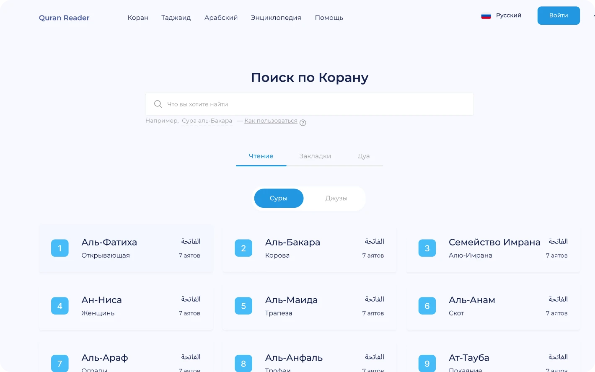
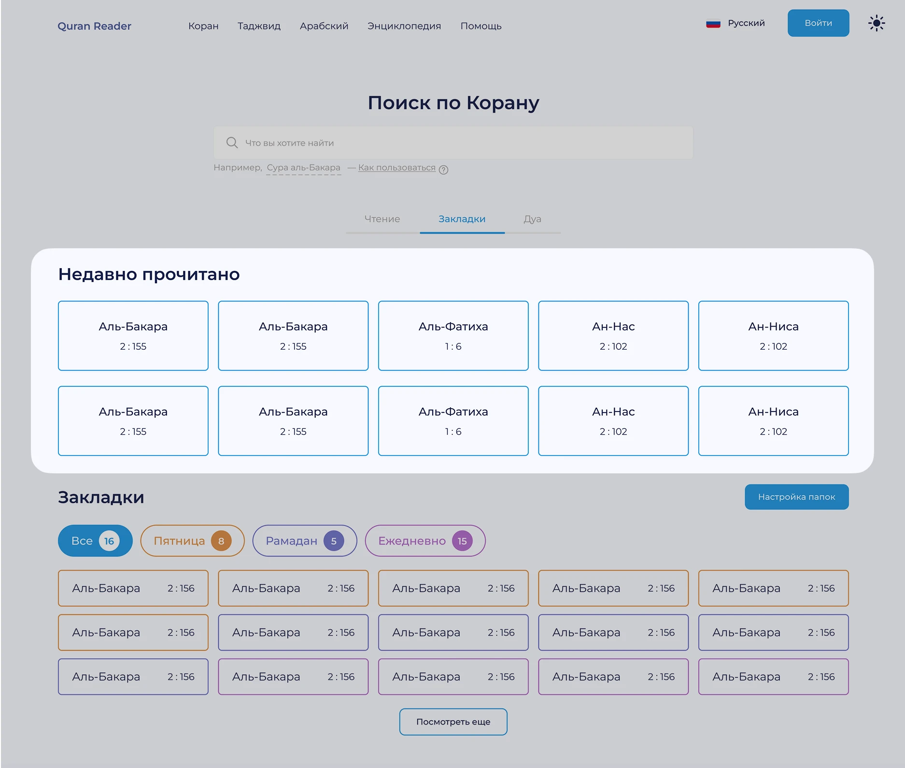
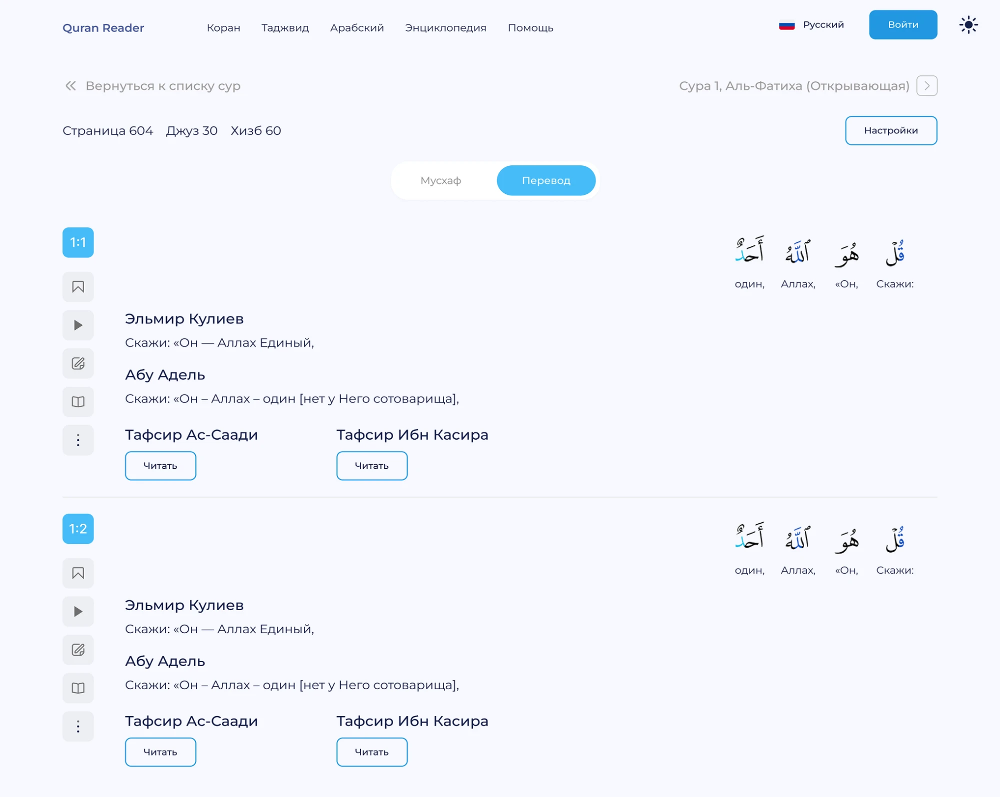
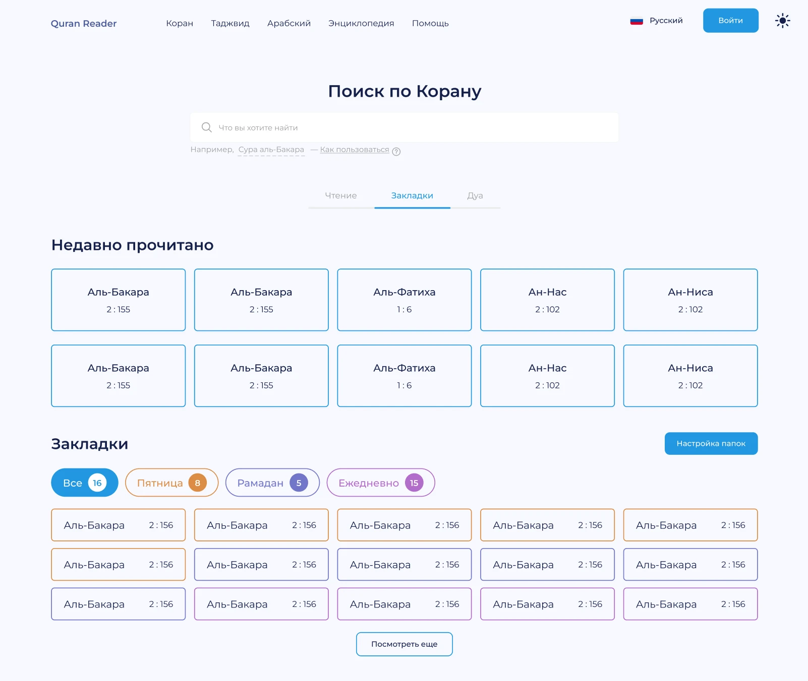
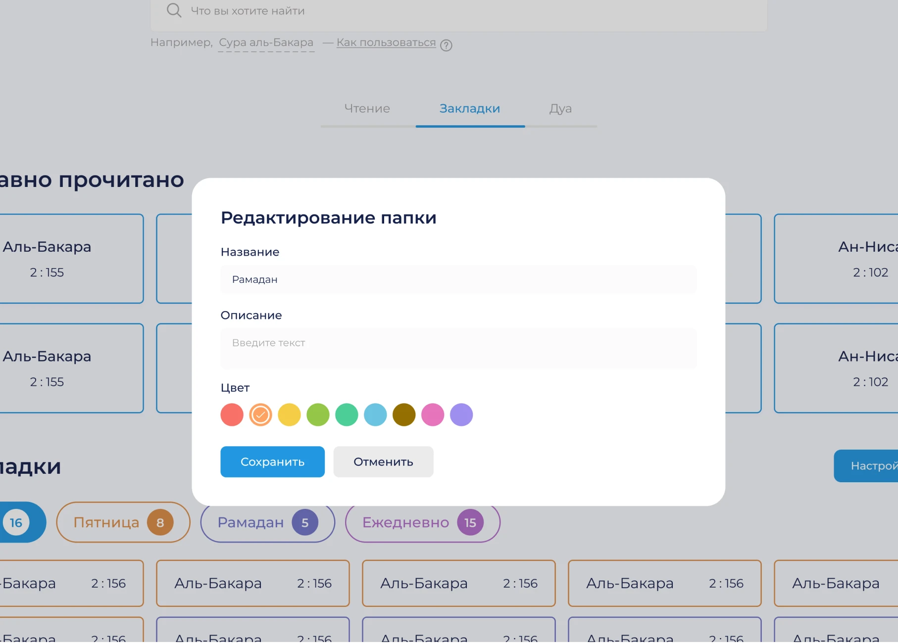
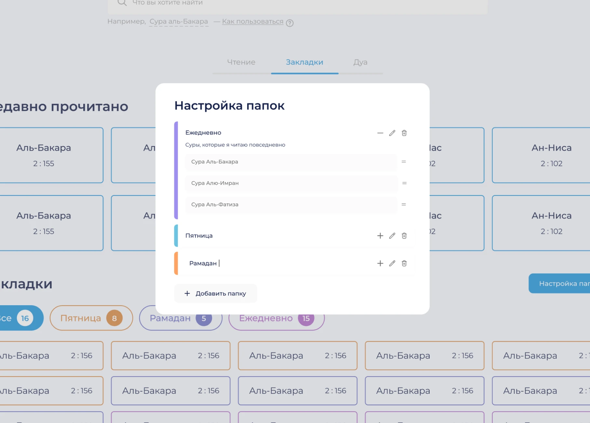
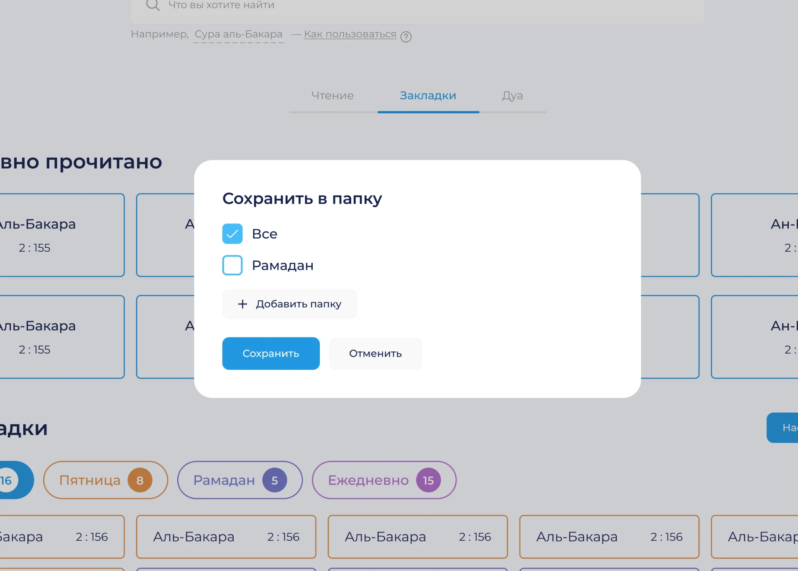
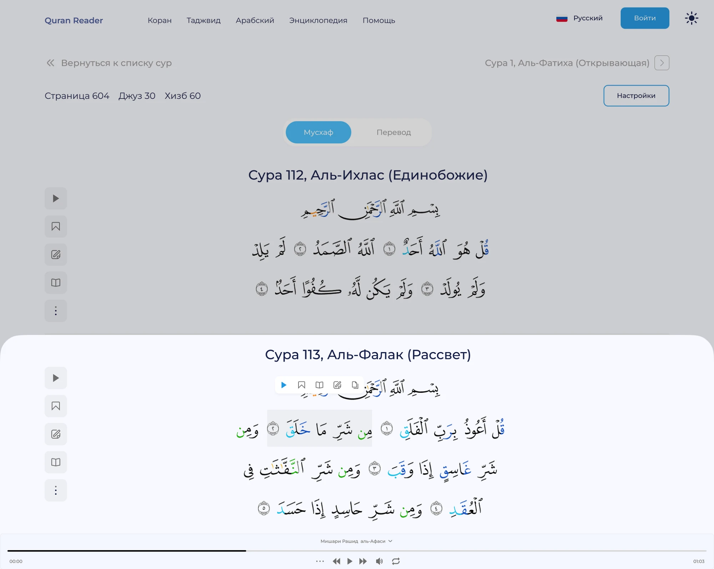
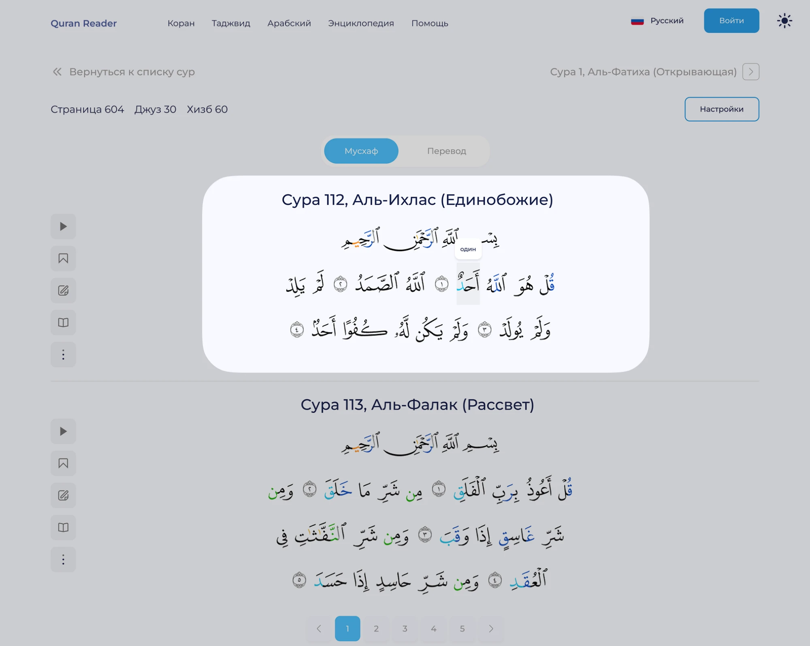

Quran Reader
Разработка онлайн-платформы для чтения, глубокого изучения
и эффективного запоминания Корана

До редизайна у платформы уже был интерфейс, но в нём не хватало персонализации
и быстрых сценариев для возвращения к важным местам. Пользователь мог
читать и слушать Коран, но ему было сложно работать с текстом более глубоко.
Аудитория
Основная аудитория продукта — русскоязычные мусульмане, которые читают и слушают Коран онлайн.
Для этой аудитории важно, чтобы интерфейс был спокойным, понятным и не перегружал чтение. Пользователь приходит не просто «посмотреть контент», а взаимодействовать с текстом внимательно и регулярно.
Команда и моя роль
Над проектом работали разработчик и я как UI/UX-дизайнер.
Я отвечала не только за визуальный интерфейс, но и участвовала в формировании структуры продукта и логики функций. В мою зону ответственности входили UX-исследование, анализ старого интерфейса, бенчмаркинг, гипотезы, пользовательские сценарии, прототипы и финальный UI-дизайн.
Проблема
Главная проблема старого интерфейса — отсутствие персонализации.
Из-за этого платформа работала как инструмент для разового чтения, но хуже поддерживала регулярное возвращение и глубокое изучение.
- пользователь мог потерять место, на котором остановился;
- не было удобного сценария для возвращения к недавно прочитанному;
- не хватало системы закладок для сохранения важных аятов;
- быстрый доступ к словам и их значениям был ограничен;
- разные сценарии чтения и прослушивания не были достаточно связаны между собой.
Цель
Целью редизайна было сделать Quran Reader более удобным для регулярного чтения и прослушивания Корана.
- Упростить навигацию и возвращение к нужным местам.
- Добавить персонализацию через закладки и недавно прочитанное.
- Улучшить сценарии чтения через разные режимы отображения текста и быстрый доступ к словам.
Исследование
Я начала с анализа старого интерфейса и изучения пользовательских ожиданий. Для этого смотрела отзывы, форумы и конкурентов, чтобы понять, какие функции чаще всего нужны людям при чтении Корана онлайн.
После исследования стало понятно, что пользователю важно не только открыть текст, но и иметь личное пространство внутри продукта: сохранять аяты, возвращаться к ним, продолжать чтение и выбирать удобный формат восприятия.
Гипотезы
- блок «Недавно прочитано» поможет пользователю быстрее вернуться к месту чтения;
- система закладок повысит персонализацию и упростит доступ к важным фрагментам;
- разные режимы чтения позволят адаптировать интерфейс под разные задачи: чтение оригинального текста, понимание смысла, изучение слов;
- быстрый доступ к переводу слов сделает чтение полезнее для тех, кто изучает арабский или хочет глубже понимать текст.
Недавно прочитано
Одним из важных решений стало добавить раздел «Недавно прочитано».
Пользователи могли терять место, на котором остановились, особенно если читали Коран не за один подход. Поэтому я спроектировала быстрый сценарий возвращения к последним открытым сурам и аятам.
Это решение снижает трение при повторном входе: пользователю не нужно заново искать нужную суру или вспоминать, где он остановился. Он может сразу продолжить чтение.

Режимы чтения
Я также проработала разные режимы чтения: режим мусхафа и режим перевода.
- Режим мусхафа нужен для тех, кто хочет читать Коран в привычном порядке и воспринимать текст ближе к печатному формату.
- Режим перевода помогает тем, кто хочет глубже понимать смысл и работать с текстом более осознанно.

Персональные закладки
Я спроектировала раздел, где пользователь сохраняет важные аяты и фрагменты текста, чтобы вернуться к ним в любой момент.
Для наглядности закладки можно группировать по папкам, каждая из которых выделяется своим цветом — это помогает быстро ориентироваться даже при большом количестве сохранений.

Закладки можно распределять по папкам для быстрого доступа
и создавать тематические группы.
Например, если человек ежедневно читает определённые главы,
он может добавить их в закладки и создать папку «Ежедневно» —
и все нужные тексты будут собраны в одном месте.



Аудиоплеер
Так как один из главных сценариев платформы — прослушивание Корана, я отдельно проработала аудиоплеер.
Пользователь может слушать выбранные аяты, переключаться между чтецами и использовать прослушивание как часть чтения или повторения. Это делает платформу удобной не только для визуального чтения, но и для аудиального восприятия текста.

Мгновенный перевод слова
Часть аудитории хочет понимать отдельные слова из Корана, поэтому я предусмотрела быстрый доступ к значению слова прямо в процессе чтения.
Это особенно важно для пользователей, которые читают арабский текст и хотят не переключаться между разными режимами или страницами, а быстро получить подсказку в контексте.

Результаты
В результате был спроектирован обновлённый интерфейс, который поддерживает не только базовое чтение и прослушивание, но и более глубокое персональное взаимодействие с текстом.
Главная ценность редизайна — в переходе от обычного сайта для чтения к персонализированной платформе, которая помогает пользователю возвращаться к чтению, сохранять важное и глубже понимать текст.
Бизнес-результат
Редизайн был направлен на рост удержания и вовлечённости пользователей.
- Retention — за счёт функции «Недавно прочитано» пользователь быстрее возвращается к месту чтения.
- Session duration — режимы чтения, аудиоплеер и перевод слов увеличивают глубину взаимодействия с текстом.
- Engagement — закладки и недавно прочитанное создают больше осмысленных действий внутри продукта.
- Feature adoption — можно отслеживать использование закладок, аудиоплеера, поиска и режимов чтения.
Основной ожидаемый эффект — рост повторных сессий и регулярного использования платформы за счёт персонализации и быстрого возврата к чтению.